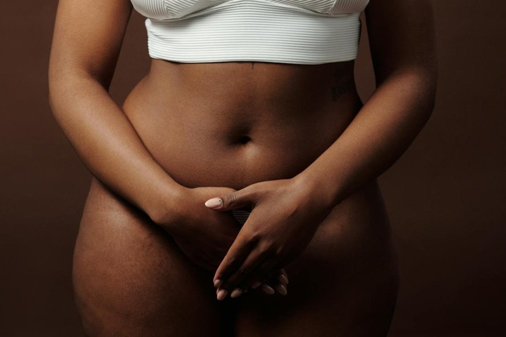

Getting Rid of Ingrown Hair Down There

Hadiyah Daché, licensed cosmetologist & esthetician
Hair Removal
6 min
← All articlesThe Book →Friendly reminder: this post contains affiliate links, which help support the Glowdega Archive. If you buy through them, I may earn a commission at no extra cost to you.
If there’s one place on your body you never expect (or want) to feel irritation, itchiness, or overall discomfort, it’s your genitals. But if you remove hair from your love below it is possible that you may occasionally experience ingrown hair—an irritating and sometimes embarrassing adverse reaction to hair removal. For most, ingrown hair isn’t a serious cause for concern as many rarely experience it. However, for those who are prone to ingrown hair, they can be pesky to deal with and in some cases may even lead to more serious skin conditions. If you’ve been struggling with irritation from ingrown hair, hyperpigmentation from ingrown hair, ingrown hair bumps or cysts on your vulva, vagina, pubic area, pelvic region—whatever you call it—we’ve got the perfect solution for you. Read on to discover how to remove ingrown hair, how to prevent ingrown hair, and the best products for ingrown hair.
How does Ingrown Hair Happen?
It is commonly thought that ingrown hair can only be the result of hair removal but that isn’t true. While traditional hair removal methods such as shaving, waxing, or depilatory creams can make one more prone to ingrown hairs, they can also result as a sign of hair follicle dysfunction, lack of exfoliation, or a natural function of the hair structure. You can also get ingrown hair from too tight clothing!
A more scientific explanation of how common ingrown hair occurs from shaving might be the accumulation of dead skin cells. When dead skin cells build up around hair follicles, they can force growing hairs to change direction and grow inward rather than upward through the skin's surface. This is why exfoliation is such a crucial skincare step for those who remove hair regularly. You also need to ensure you (or your barber or esthetician) uses proper hair removal techniques for your hair type. Shaving too closely, pulling skin taut while shaving, or shaving against the hair's natural growth direction can create sharp, angled tips that easily pierce the skin when growing back—especially if your hair is more coarse or curly. People with naturally curly or coarse hair are more susceptible to ingrown hairs because the curved structure of their hair makes it easier for strands to grow back into the skin.
With waxing or sugaring, ingrown hair forms for slightly different reasons. Follicle distortion and skin cell blockage are the most common causes ingrown hair occurs from these hair removal methods. The forceful pulling action of waxing or sugaring can sometimes distort or damage the hair follicle, creating a slightly curved channel. When the new hair grows, it follows this altered path, potentially growing sideways or curling back into the skin instead of emerging straight up. In the days following hair removal, dead skin cells can accumulate over the empty follicle opening. As the new hair tries to emerge, it encounters this barrier and may grow sideways beneath it rather than breaking through. Additionally, the physical trauma from pulling out hairs can trigger inflammation in the skin, which may alter how the new hair grows back.
Why Does Ingrown Hair Cause Bumps?
It is possible for a simple ingrown hair to transform into a more serious skin condition. When the follicle becomes deeply infected, it can develop into a fluid-filled cyst. These cysts appear as soft, painless lumps under the skin initially but may become painful if infected. Ironically, this doesn’t always equate to it being an ingrown hair cyst. That means that though a cyst may form, there may not be a hair present in it. In some cases, an ingrown hair can turn into a hard lump under the skin when the body responds to the hair as a foreign object, creating inflammation and scar tissue around it.
Occasionally, ingrown hairs can become infected. And in those cases, they may become cysts or bumps as well. When hair grows into the skin, it can create an entry point for bacteria, resulting in folliculitis, which is an infection of the hair follicles. This condition can cause pus-filled bumps and may require medical attention if it worsens. Chronic ingrown hairs can also lead to more severe skin conditions, including scarring and the formation of keloids, which are raised scars that can be difficult to treat.
Can You Get Ingrown Hairs from Waxing or Sugaring?
Short answer is: yes, as mentioned above. But the more nuanced answer is that improper waxing and sugaring technique is more likely to lead to ingrowns. Professional waxing and sugaring experts have tried and true techniques that actually prevent ingrown hairs from occurring. They also will be much more effective at actually removing the hair from the root rather than causing hair breakage. And professional techniques usually significantly minimize the chances of a trauma response.
An expert esthetician is also able to help you decide which form of hair removal may be best for you. Not everyone will be a candidate for waxing. And some clients may be better suited for hard wax vs. soft wax. Most clients benefit from sugaring and will usually have a much better overall experience with it long-term. And if you let us tend to your GARDEN at Glowdega, you’re guaranteed a remarkable, ingrown hair-free experience.
How to Remove an Ingrown Hair Cyst
If you suspect you’ve got an ingrown hair cyst then the immediate action would be to apply a warm compress over the area. Soak a clean washcloth in warm (not hot) water and hold it against the cyst for 10-15 minutes, 3-4 times daily. This helps soften the skin and bring the hair closer to the surface. The warmth also increases blood circulation, which can aid healing. After the warm compress, use a clean, soft-bristled brush or washcloth to very gently exfoliate the area using circular motions. This helps remove dead skin cells that might be trapping the hair. If you can see the hair beneath the skin's surface, wait until it naturally emerges closer to the surface. Don't force it out if it's still deep under the skin.
It is important to note that if you can’t remove the ingrown hair with the above method within 7-10 days, then seek medical attention. Do not make any further attempts at removal as you can risk a serious infection.
Common myths about ingrown hair removal
There are numerous myths surrounding ingrown hair removal that can lead to ineffective or harmful practices. One common misconception is that shaving over an ingrown hair will help it to break free from the skin. In reality, this can further irritate the area, leading to increased inflammation and the risk of infection. Instead, it is essential to focus on gentle methods that promote healing rather than exacerbating the problem.
Another prevalent myth is that ingrown hairs are only a concern for individuals with curly hair. While people with coarse or curly hair are indeed more prone to this issue, anyone can experience ingrown hairs regardless of hair texture. Factors such as skin type and hair removal methods play a significant role in the likelihood of developing ingrown hairs, making it a universal concern.
Additionally, some believe that simply removing the hair will resolve the issue permanently. However, this is not always the case, as the underlying causes of ingrown hairs may persist despite hair removal. It is crucial to adopt a comprehensive approach that includes prevention strategies and proper skin care to keep ingrown hairs at bay for good.
The Best Products for Ingrown Hair Removal
We’re maybe a little biased but VOILA! Vanishing Serum is the best product on the market for ingrown hair in the intimate regions. This serum was specifically designed for ingrown hair (and hyperpigmentation) on the body. The difference in VOILA! from other serums on the market is that we use no alcohols, oils, or beta-hydroxy acids which leads to much less irritation. Our “magnificent 7” blend of alpha-hydroxy acids along with hydrating ingredients like glycerin make for the perfect solution to your ingrown hair problem!
Ready to transform your hair removal experience? At Glowdega, our expert estheticians specialize in sugaring techniques that minimize your risk of ingrown hairs while providing long-lasting results. To enhance your results and keep ingrown hairs at bay, incorporate VOILA! Vanishing Serum into your post-hair removal routine. Each new client receives a sample with their first appointment.
NEXT STEPS:
Book your Brazilian sugaring appointment at Glowdega
Add VOILA! Vanishing Serum to your skincare routine
Experience the difference professional care and premium products can make
Your path to smoother, ingrown-free skin starts here. Visit Glowdega's booking page to schedule your service and ask your esthetician about incorporating VOILA! Vanishing Serum into your maintenance routine.